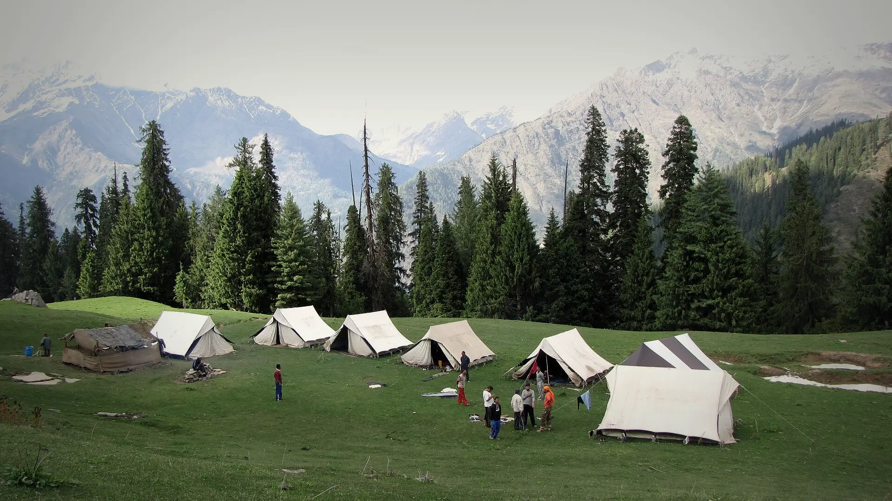

01Day 1 · Kasol · 1,580 mkm 0.1
Up from the Parvati
~520kmFrom Delhi · Bus, change at Bhuntar
The trek starts at Kasol in the Parvati valley.

Photo: balu, CC BY 4.0सर पास · Kullu, Himachal
The trek in one line, and what you can do with it.
Sar Pass is billed as a beginner's pass, but its summit day is long and steep.
5 stops on the map, then the climb. Scroll the stops and the map follows.
01Day 1 · Kasol · 1,580 mkm 0.1
~520kmFrom Delhi · Bus, change at Bhuntar
The trek starts at Kasol in the Parvati valley.
01Day 1 · Grahan · 2,300 mkm 8.0
8kmToday · From Kasol
Grahan can only be reached on foot. Its houses are wood and stone, and outsiders may not enter its carved temple.
04Day 4 · Sar Pass · 4,223 mkm 16.0
~10hSummit day · From about 3 a.m.
From Nagaru, about a kilometre up to Sar Pass.
04Day 4 · Biskeri Topkm 18.4
~750ftOne slide · In under a minute
After a steep climb to Biskeri Top, trekkers slide down the long snow slope on their backs.
05Day 5 · Barshaini · 2,210 mkm 27.9
5kmToday · About 3 h
Down past Bhandak Thach and Pulga, across the Parvati, to Barshaini at the end of the road.
Best in May–Jun.
Dark: the months the trek’s sources call its best. Mid: possible. See all treks in May.
 Photo: balu, CC BY 4.0
Photo: balu, CC BY 4.0
Base prices from 8 operators’ own pages, per person. GST and travel are often extra. Treqz sells nothing.
The practical things, then the questions people ask.
One thing from each part of the packing list, so nothing big is missed. The full list, with where to rent and the daily rates, is on the 3D page.
The full packing list →


Kasol has good signal. Grahan has none, but the guesthouse has wi-fi. Jio and Airtel work in patches, as at Nagaru camp.
Bikat AdventuresThe Grahan guesthouse has power points, but supply is patchy. After Grahan there is no electricity.
Bikat AdventuresKasol has a market, but the group leaves for Grahan on Day 1. Don't leave buying to the last minute.
Bikat AdventuresIn May and June Kasol is 15–25 °C. Higher up, days are 5–10 °C and nights drop below freezing.
Bikat AdventuresLocals set the price: ₹1,000 a day for a 10 kg bag. Bikat's add-on is ₹5,000 for the trek.
Bikat AdventuresAbout 28.0 km of walking over 5 days on the trail.
The highest point is 4,223 m, about 2,560 m above the start.
Its sources grade it Moderate.
May–Jun. It is also possible in Sep–Nov.
₹5,999 to ₹12,500 per person: base prices from 8 operators' own pages. GST and travel are often extra.
Kasol has good signal. Grahan has none, but the guesthouse has wi-fi. Jio and Airtel work in patches, as at Nagaru camp.
Kasol has plenty of ATMs. There are none on the trail.
Thermal top and bottom, Full-sleeve T-shirts, Full-sleeve sweater, Warm jacket, Rain jacket and rain pants, Quick-dry trek pants ×2, Waterproof warm gloves, Woollen cap. The full list is on the 3D page.
Its sources do not list December to February as a trekking season.
Its sources grade it Moderate and it takes 5 days on the trail, with a highest point of 4,223 m.
Kheerganga, Pin Parvati Pass, Prashar Lake, Hampta Pass, Bhrigu Lake.


Treks in May · Treks in June · Treks in Himachal Pradesh · Moderate Treks in Himachal Pradesh · 5 Day Treks in India · Treks in Kullu, Himachal Pradesh · Treks in India Under ₹10,000 · Sar Pass vs Hampta Pass · Sar Pass vs Bhrigu Lake · Sar Pass vs Beas Kund · Sar Pass vs Pin Parvati Pass · Free trek finder · All treks in 3D